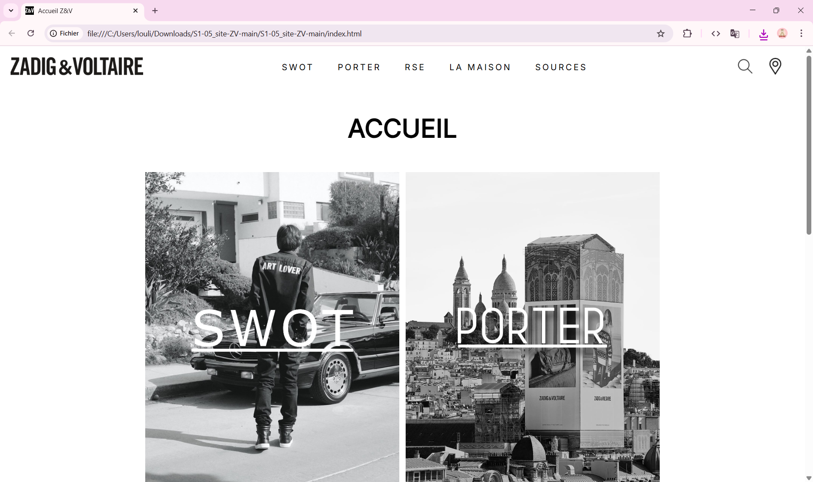
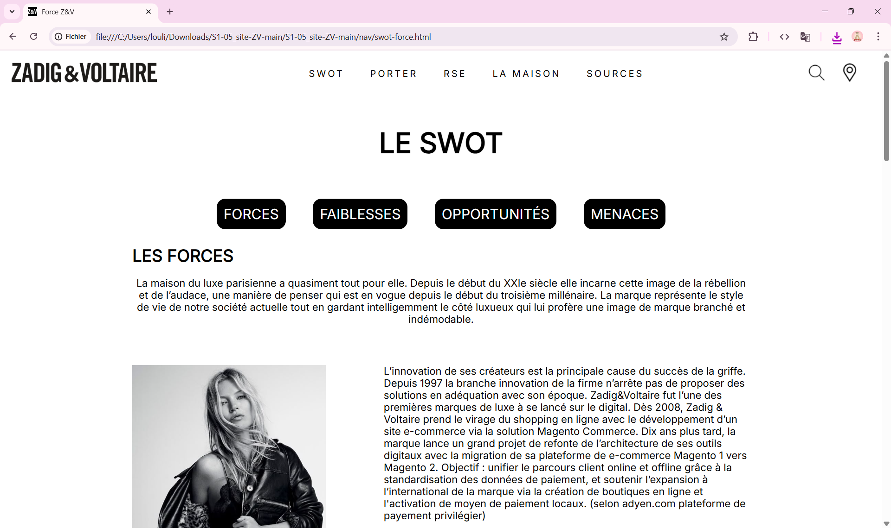
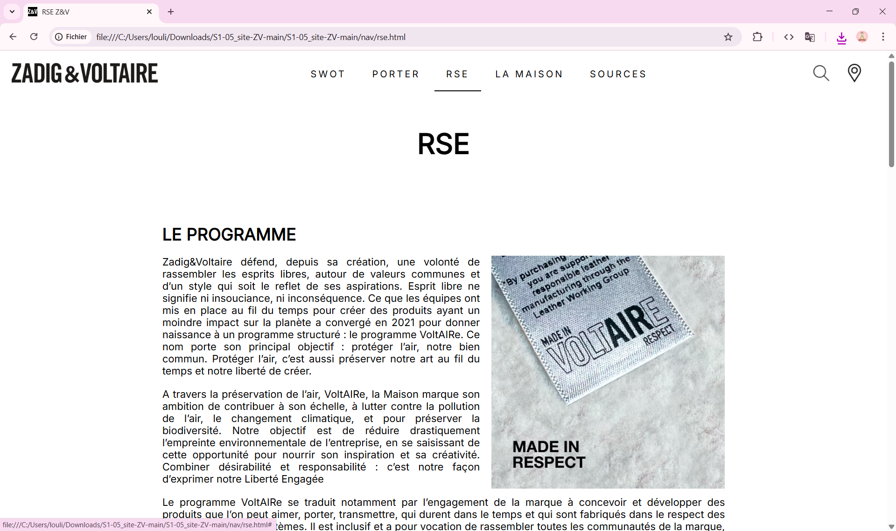

Aperçu du projet


Contexte & but du projet
En première année de BUT, l'objectif de ce projet était de reproduire un site existant (Zadig & Voltaire) en HTML / CSS, mais d'y substituer des contenus analytiques : recueil des besoins, analyse SWOT, objectifs.
L'idée était de mieux comprendre la structure d'un site (balises, layout, responsive, CSS) en la déconstruisant et en la reconstruisant, tout en appliquant une méthodologie d'analyse.
Technologies utilisées
Contenus & livrables intégrés
- Reproduction du site : structure HTML & CSS du site modèle.
- Recueil des besoins : page(s) décrivant les attentes, les utilisateurs, les fonctionnalités souhaitées.
- Analyse SWOT : forces, faiblesses, opportunités, menaces du site étudié.
- Plan du site & wireframes : structuration logique des pages.
- Document de réflexion : pourquoi tel choix, comment améliorer le site d'origine.
Défis techniques rencontrés
- Responsive / adaptabilité : faire fonctionner le site sur différents supports.
- Structure CSS : organiser les styles, gérer les classes et sélecteurs.
- Reproduction fidèle : respecter le design (marges, typographie, couleurs) sans accès aux sources originales.
- Intégration du contenu analytique : ajouter des pages non visuelles (SWOT, recueil) tout en gardant une cohérence de navigation.
Compétences développées
HTML & structuration
Balises sémantiques, agencement des sections
CSS & mise en forme
Flexbox, grilles, responsive, media queries
Analyse projet
Recueil des besoins, analyse SWOT, réflexion fonctionnelle
Méthodologie & rigueur
Reproduire fidèlement un modèle, respecter une démarche UX / analyse
Conclusion & apprentissages
Ce premier projet m'a permis de poser des bases solides en HTML / CSS et de comprendre la structure d'un site web existant. En ajoutant les parties analytiques (recueil, SWOT), j'ai pu lier technique et réflexion projet. C'est un bon point de départ dans mon parcours web.